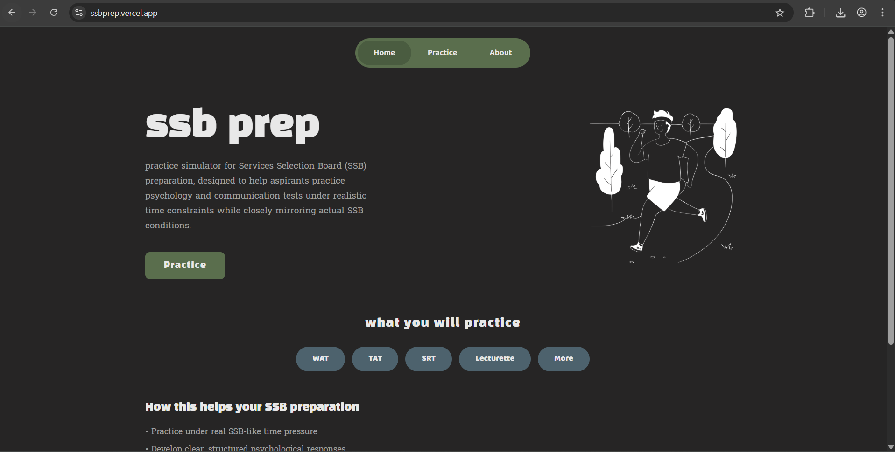
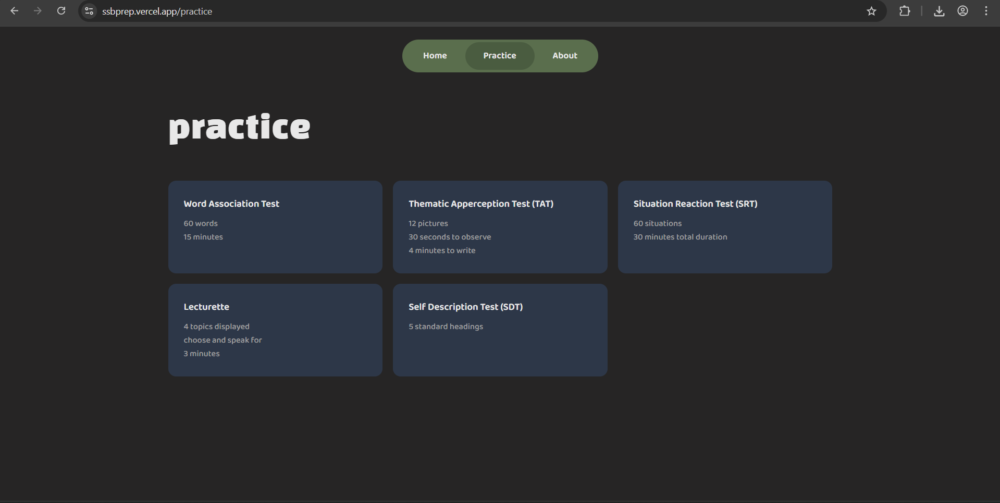
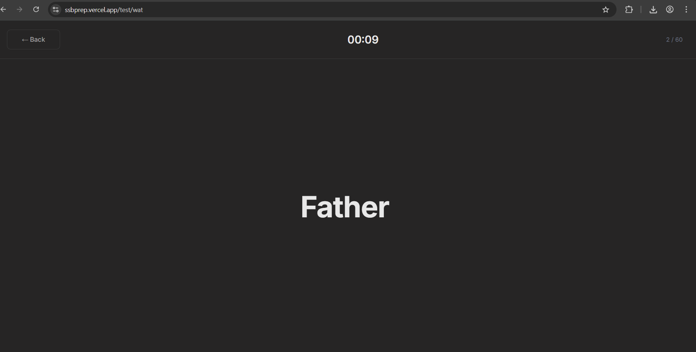
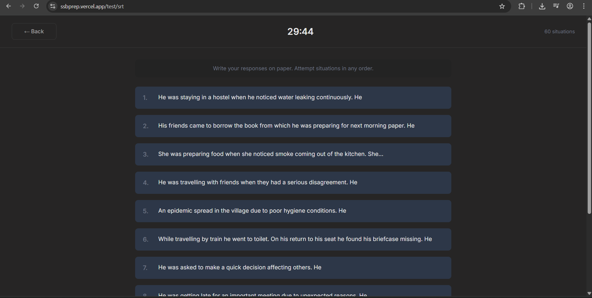
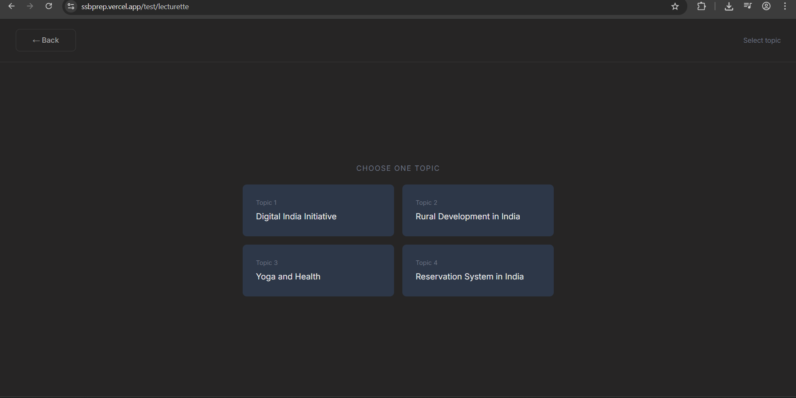
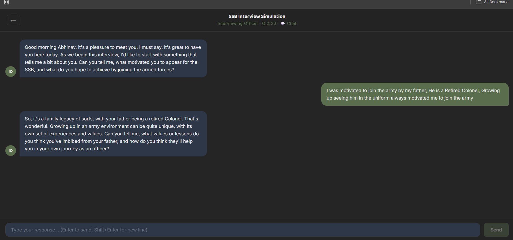
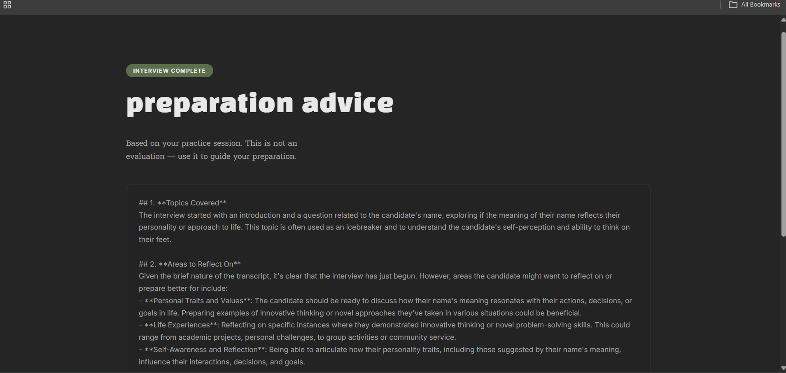

SSB Practice
Simulator
A full‑stack web platform that replicates the psychological tests and AI‑powered interview simulation of the Indian Armed Forces Services Selection Board (SSB) — for ethical, practice‑only preparation.
Problem Statement
Existing SSB preparation resources lack realistic, time‑bound simulation of psychological tests, limiting exposure to actual test pressure. There is no platform that combines strict timing, real content, and an AI‑powered interactive interview in one place — without scoring or evaluating the candidate.
Literature Review
Study of SSB preparation books and online platforms revealed limited availability of realistic timed simulation systems. Most tools provide only static question banks with no timing enforcement.
Research Gap
Need for a structured, discipline‑enforced, real‑time simulation platform that combines all five psychological tests with an AI interviewer — without any scoring or OLQ evaluation.
Key Features
5 Psychological Tests
WAT, TAT, SRT, SDT, and Lecturette — each with strict timers matching real SSB conditions. Content is fetched randomly from PostgreSQL so every session is unique.
AI Interview Simulator
Powered by Google Gemini. User fills a detailed PIQ (11 sections). The AI Interviewing Officer conducts a realistic 20‑question interview and generates structured preparation advice.
Voice Mode
Speak your answers via the Web Speech API. The AI's responses are read aloud via Text‑to‑Speech with a male voice preference. Continuous recognition with a 2.5s silence timeout.
Interactive WAT Mode
Users can type sentences directly during the WAT. After the test, Gemini AI analyses structure, positivity, and action‑orientation — and delivers a preparation report.
Safety Controls
Rate limiting (20 req/10 min), 10 kb payload cap, LLM output clamped to 1200 tokens, conversation history trimmed to 25 messages. No user data stored on server.
Ethics First
No scoring. No OLQ evaluation. No personality inference. The platform provides practice stimuli only — decisions are always left to the candidate.
System Architecture
Technology Stack
React 18 + Vite
Frontend
Node.js + Express 5
Backend API
PostgreSQL (Supabase)
Database
LLM API
AI Provider
Vercel
Frontend Deploy
Render
Backend Deploy
GitHub
Version Control
Web Speech API
Voice I/O (Browser)
Stateless Backend Flow
Full PIQ + conversation history sent with every request · No server-side sessions · No interview data stored in DB
AI Interview
Simulator
The user completes an 11‑section Personal Information Questionnaire (PIQ). This data is sent with every chat request to give Gemini full context about the candidate — background, education, family, hobbies, and achievements.
- 20 questions, auto‑terminates naturally
- Post‑interview preparation report generated by AI
- Chat Mode (type) + Voice Mode (speak & listen)
- No OLQ scoring — practice simulation only
Interactive
WAT Feedback
Users type their word‑association sentences in real time. On completion, the responses are sent to Gemini, which evaluates their linguistic structure — not personality.
- Auto-saves whatever is typed when 15s timer expires
- "End Early" button to submit anytime
- Feedback covers: structure, positivity, action‑orientation, preachy language
- Structured into: Observations · Strengths · Areas to Refine · Tips
Results & Impact
The platform was successfully deployed and achieved over 350 visitors within two weeks of release, demonstrating real‑world engagement and practical usability.

Home Screen

Test Selection Page

WAT – Timed Word Display

SRT – Situation Flow
TAT – Image Simulation

Lecturette – Topic Selection

AI Interview – Chat Interface

Post-Interview – Preparation Feedback
Conclusion & Future Work
SSB Practice Simulator successfully bridges the gap between static SSB preparation and real‑time, AI‑powered simulation. All five psychological tests are functional with strict timing. The AI interview module conducts realistic 20‑question sessions and generates actionable feedback — all without scoring or judging the candidate.
Multilingual Support
Hindi and regional language support for wider accessibility
Progress Tracking
Optional user accounts to track improvement across practice sessions
Real TAT Images
Replacing image codes with actual TAT images for full test realism
Academic Credits
Project Guide
Dr. Ajit Noonia
Student — B.Tech CSE Core, 3rd Year
Abhinav Mishra
23FE10CSE00322